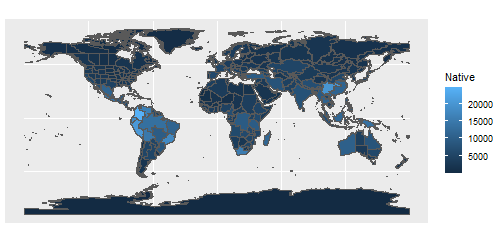
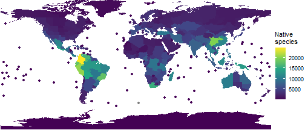
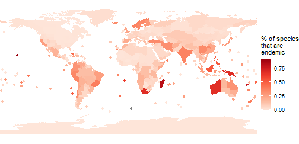
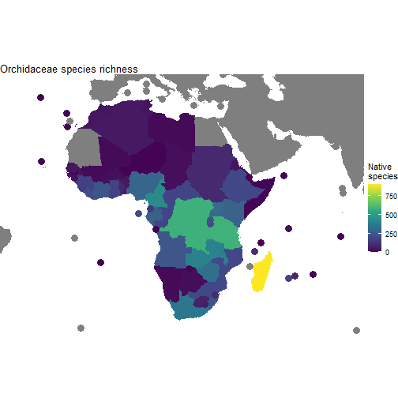

Mapping diversity with rWCVP
Matilda Brown
26/05/2022
Source:vignettes/articles/mapping-diversity.Rmd
mapping-diversity.RmdThe World Checklist of Vascular Plants (WCVP) provides distribution data for the > 340,000 vascular plant species known to science. We can use this data to map various metrics of vascular plant biodiversity.
As well as rWCVP, we’ll use the tidyverse
packages for data manipulation, the sf package for handling
spatial data, and the gt package for formatting tables.
In this example we use the pipe operator
(%>%),dplyr and ggplot - if
these are unfamiliar we’d suggest checking out https://tidyverse.org/ and
some of the help pages therein, or this code might be difficult to
interpret.
Now, let’s get started!
Species richness
The obvious place to start is global species richness. We can use
wcvp_summary to condense the global occurrence data for all
species into raw counts per WGSRPD Level 3 Area.
This gives us a list, with information in the first five slots and
the data in the slot named $Summary. It’s this
$Summary data frame that we’ll be working with.
global_summary <- wcvp_summary()
#> i No area specified. Generating global summary.
#> i No taxon specified. Generating summary of all species.
glimpse(global_summary)
#> List of 6
#> $ Taxon : NULL
#> $ Area : chr "the world"
#> $ Grouping_variable : chr "area_code_l3"
#> $ Total_number_of_species : int 347525
#> $ Number_of_regionally_endemic_species: int 347527
#> $ Summary : tibble [368 x 6] (S3: tbl_df/tbl/data.frame)
#> ..$ area_code_l3: chr [1:368] "ABT" "AFG" "AGE" "AGS" ...
#> ..$ Native : int [1:368] 1608 4510 5331 2082 5357 2990 3382 198 3506 2578 ...
#> ..$ Endemic : int [1:368] 0 862 241 252 852 30 60 19 178 75 ...
#> ..$ Introduced : int [1:368] 300 101 711 412 404 928 182 48 345 101 ...
#> ..$ Extinct : int [1:368] 0 1 1 2 7 2 2 0 30 0 ...
#> ..$ Total : int [1:368] 1908 4618 6045 2497 5769 3921 3602 246 3934 2680 ...We could display this using wcvp_summary_gt but that’s
going to be a big table, so let’s skip straight to plotting.
rWCVPdata includes the area polygons for the WGSRPD
Level 3 Areas - this is going to be the base that we add things to.
Let’s add the global_summary to the spatial data, and plot
a map where species richness defines colour.
#load the spatial data
area_polygons <- rWCVPdata::wgsrpd3 %>%
#add the summary data, allowing for the different column names
left_join(global_summary$Summary, by=c("LEVEL3_COD"="area_code_l3"))
ggplot(area_polygons)+
geom_sf(aes(fill=Native))
Hmm, it’s not as pretty as it could be and we’re losing all the islands - let’s make a few tweaks.
#wrapping n brackets so it assigns as well as prints
(p_native_richness <- ggplot(area_polygons) +
#remove borders
geom_sf(aes(fill=Native), col="transparent") +
# add points for islands
stat_sf_coordinates(aes(col=Native))+
#remove borders
theme_void() +
#use a better colour palette
scale_fill_viridis_c(name = "Native\nspecies")+
scale_colour_viridis_c(name = "Native\nspecies")+
#remove extra whitespace
coord_sf(expand=FALSE)
)
Much better!
Endemic species richness
We can also incorporate other metrics - let’s look at the proportion of species in each Level 3 Area that are endemic to that Area. We’ll use a slightly different colour palette too, just for fun.
area_polygons <- area_polygons %>%
mutate(percent_endemic = Endemic/Native)
(p_prop_endemic <- ggplot(area_polygons) +
#remove borders
geom_sf(aes(fill=percent_endemic), col="transparent") +
# add points for islands
stat_sf_coordinates(aes(col=percent_endemic))+
#remove borders
theme_void()+
#use a better colour palette
scale_fill_distiller(palette="Reds", direction=1, name="% of species\nthat are\nendemic")+
scale_colour_distiller(palette="Reds", direction=1,
name="% of species\nthat are\nendemic")+
#remove extra whitespace
coord_sf(expand=FALSE)
)
Endemism hotspots really jump out! We can use this information to produce a table of the top ten.
area_polygons %>%
#get the region and continent names
left_join(wgsrpd_mapping) %>%
#get the top 10
slice_max(percent_endemic,n=10) %>%
#drop the spatial data
st_drop_geometry() %>%
select(LEVEL3_NAM, percent_endemic, LEVEL1_NAM) %>%
group_by(LEVEL1_NAM) %>%
#format as a table
gt() %>%
cols_label(
percent_endemic = "% Endemic",
LEVEL3_NAM = "WGSRPD Level 3 Area"
) %>%
tab_options(
# some nice formatting
column_labels.font.weight = "bold",
row_group.font.weight = "bold",
row_group.as_column = TRUE,
data_row.padding = px(1),
table.font.size = 12,
table_body.hlines.color = "transparent",
) %>%
#format the number as %
fmt_percent(
columns = percent_endemic,
decimals = 1
)
#> Joining, by = c("LEVEL3_NAM", "LEVEL3_COD", "LEVEL2_COD", "LEVEL1_COD")| WGSRPD Level 3 Area | % Endemic | |
|---|---|---|
| PACIFIC | Hawaii | 91.7% |
| New Caledonia | 76.8% | |
| AFRICA | Madagascar | 82.1% |
| Cape Provinces | 67.7% | |
| St.Helena | 61.7% | |
| ASIA-TROPICAL | New Guinea | 67.8% |
| Borneo | 52.8% | |
| Philippines | 52.1% | |
| AUSTRALASIA | Western Australia | 67.2% |
| SOUTHERN AMERICA | Juan Fernández Is. | 51.0% |
We can attach any variable to area_polygons - it doesn’t
have to be from the World Checklist!
Limiting maps to an area of interest
One more example, showing how we can limit our maps to a specific area of interest. Let’s look at orchids in Africa.
orchid_africa_summary <- wcvp_summary("Orchidaceae", "family", get_wgsrpd3_codes("Africa"))
#> i Matches to input geography found at Continent (Level 1)Remember that the dataset is saved in the $Summary slot
(trying to join orchid_africa_summary will cause an
error).
#reset the spatial data by loading it in afresh
area_polygons <- rWCVPdata::wgsrpd3 %>%
#add the summary data, allowing for the different column names
left_join(orchid_africa_summary$Summary, by=c("LEVEL3_COD"="area_code_l3")) %>%
#add continent and region names for easy filtering
left_join(wgsrpd_mapping)
#> Joining, by = c("LEVEL3_NAM", "LEVEL3_COD", "LEVEL2_COD", "LEVEL1_COD")We could filter our polygons to only those in Africa, but from a mapping perspective it makes more sense to leave them in (though greyed out). So, to constrain our map, we need to set up custom limits.
#get a sensible bounding box for the polygons in Africa
bounding_box <- st_bbox(area_polygons %>% filter(LEVEL1_NAM =="AFRICA"))
#add a buffer as we set limits
xmin <- bounding_box["xmin"] - 2
xmax <- bounding_box["xmax"] + 2
ymin <- bounding_box["ymin"] - 2
ymax <- bounding_box["ymax"] + 2
(p_orchids <- ggplot(area_polygons) +
#remove borders
geom_sf(aes(fill=Native), col="transparent") +
# add points for islands
stat_sf_coordinates(aes(col=Native), size=4)+
#bounding box we set up above
coord_sf(xlim=c(xmin, xmax), ylim=c(ymin, ymax))+
#remove borders
theme_void()+
#set colour palette (fill for polygons, colour for points)
scale_fill_viridis_c(name = "Native\nspecies")+
scale_colour_viridis_c(name = "Native\nspecies")+
ggtitle("Orchidaceae species richness")
)